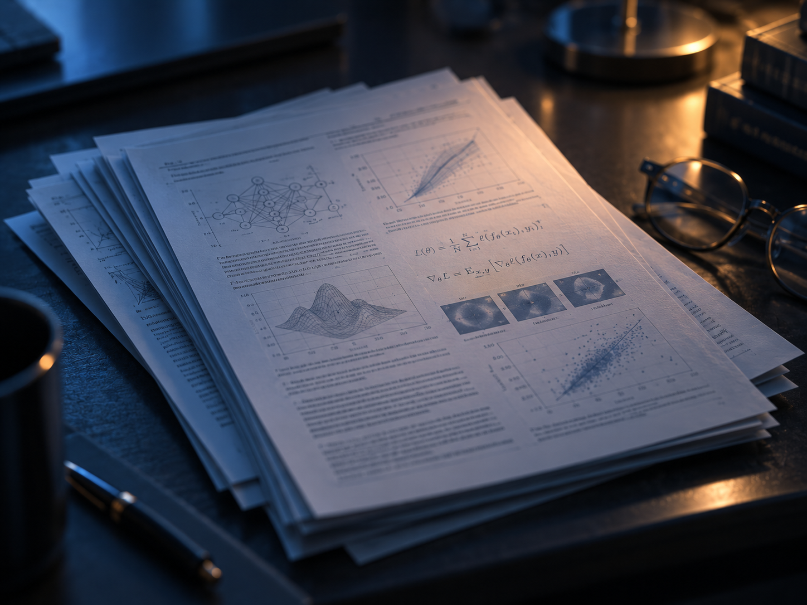

AI Computer Vision Research
Segment Anything Model
(SAM): a new AI model from
Meta AI that can “cut out”
any object, in any image,
with a single click
SAM is a promptable segmentation system with zero-shot generalization to unfamiliar objects and images, without the need for additional training.
→ Explore resourcesLatest news
View news →PicoScenes now supports UDPRemoteLogger.
New coherence processing capabilities for higher measurement accuracy.
We are pleased to announce our enhanced research capabilities.
AI for a more open world.
Article
PAPERSRESEARCHTECHNICAL
Read the full paper and related resources about our research and technology.
Presentation
TALKSSLIDESEVENTS
Talks and slides introducing our research and applications.
Video
DEMOSPROJECTSINTERVIEWS
Watch project videos, demos, and research highlights.
Example
SEGMENTATIONDATASETSMODELS
Try examples and explore segmentation results with our models.
About us
TEAMMISSIONCOLLABORATION
Learn more about the project, our team, and collaborators.
Explore →RESEARCH PEOPLE REAL IMPACT
ABOUT US
The TESSERA Project
Earth observation for a more resilient planet
TESSERA (Temporal Embeddings of Surface Spectra for Earth Representation and Analysis) is a research project at the University of Cambridge developing foundation models for Earth observation.
We learn general-purpose representations from a full year of Sentinel-1 and Sentinel-2 satellite observations, compressing dense, multi-spectral data into rich, 128-dimensional per-pixel embeddings at 10m spatial resolution.
TESSERA aims to enable a wide range of downstream applications, from land cover classification to climate risk analysis, with minimal additional training.
LEAD FACULTYOUR ACADEMIC LEADERSHIP
Srinivasan KeshavRobert Sansom Professor of Computer ScienceDepartment of Computer Science and Technology, Cambridge
David A. CoomesProfessor of Forest EcologyDepartment of Plant Sciences, Cambridge
Anil MadhavapeddyProfessor of Planetary ComputingDepartment of Computer Science and Technology, Cambridge
Caroline UhlerProfessor of Machine LearningDepartment of Engineering, Cambridge
RESEARCHERSOUR RESEARCH TEAM
James BallEPIC PostdocDepartment of Plant Sciences, Cambridge

María GonzálezResearch AssociateDepartment of Computer Science and Technology, Cambridge
Zhepeng Feng (Frank)PhD student and lead researcherDepartment of Computer Science and Technology, Cambridge
Felipe Beggiomini4C PhD StudentDepartment of Plant Sciences, Cambridge